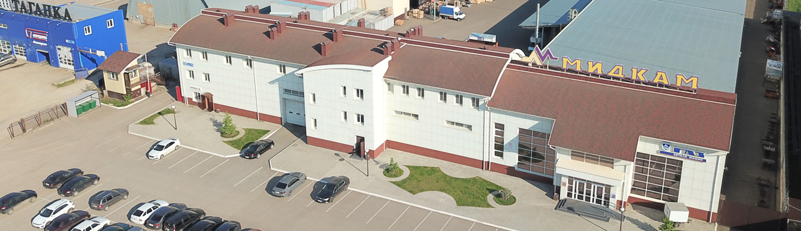

Компания МИДКАМ работает в сфере поставок любых комплектующих для грузовых автомобилей
КАМАЗ, МАЗ, УРАЛ, ЗИЛ, а также для Европейских тягачей и новых КАМАЗов линейки 5490.
В ассортименте также представлены автозапчасти для среднетоннажных автомобилей ГАЗ, отечественных и импортных
прицепов и полуприцепов СЗАП, НЕФАЗ, ТОНАР, KRONE, SCHMITZ и других, комплектующих к двигателям
CUMMINS, ЯМЗ, КАМАЗ, ММЗ, ЗМЗ, ТМЗ, тракторные автозапчасти, автоаксесуары, инструменты и
принадлежности.
История нашей компании начинается с 1995 года.
За период работы свыше 25 лет нами выверены только надежные
поставщики.
Все товары имеют гарантию и сертификаты от производителя.
На сегодняшний день ассортимент свыше 35 000 товаров и большая
часть в наличии.
Интернет-магазин www.midkam.ru работает 24/7 Каждый покупатель для нас уникален, при необходимости менеджеры
индивидуально помогут подобрать необходимый под Ваши требования
товар и организуют доставку.
Многолетняя стабильность Индивидуальный подход Доступные цены Качественные товары Аналоги товаров в ассортименте Максимальная выгода для клиента
Обязательная проверка качества
Гарантия от производителя до 3-х лет
Свыше 600 производителей в ассортименте
Мидкам уже много лет остается крупнейшим продавцом
автозапчастей в Республике Татарстан, в городе Набережные Челны.
Мы сотрудничаем с большинством крупных производственных
предприятий разных городов и стран. Отдел технического контроля
всегда следит за качеством поставляемых товаров, поэтому мы
гарантируем выполнение обязательств по качеству предлагаемого
товара!
Складские помещения от 1000 до 10000 м²
Склады оснащены современной WMS системой.
Благодаря правильному расположению хрупких и зависимых
от температуры товаров, а также бережному упаковыванию – груз
до Вас дойдет в целости и сохранности!
Мы работаем со всеми клиентами! Будь у Вас крупная торговая сеть,
магазин автозапчастей, сервис СТО, транспортная компания,
производство или же вы физическое лицо и приобретаете товар
для личных целей.
Вы можете оформить заказ онлайн на сайте, позвонить нам на горячую
линию или оформить индивидуальный заказ.
Наши менеджеры всегда рады помочь Вам!
Мы приглашаем Вас к сотрудничеству с компанией МИДКАМ
Экспорт товаров в страны СНГ по ставке НДС 0%
Мы отправляем товары в следующие страны – Беларусь, Азейбарджан,
Казахстан, Киргизия, Узбекистан, Афганистан, Туркменистан.
Все этапы по оформлению документов и отправки товара мы берем на себя!
Мы подготовим инвойс (счет-фактура), упаковочный
лист, контракт, оригинал Российской декларации, накладная,
сертификат происхождения от ТПП.
В городе Набережные Челны у нас
расположены 3 торговые точки:
Главный распределительный центр расположен по адресу: пр. Казанский, дом 123.
Основное направление данной точки – это оптовые продажи
в регионы России. В наличии абсолютно все запасные части
из нашего ассортимента.

В черте города, по адресу: пос. Орловка, ул. Центральная, дом 186 расположен второй офис.
Тут присутствуют отдел продаж запасных частей на автомобили КАМАЗ
и отечественные прицепы, отдел автозапчастей на автомобили МАЗ
и комплектующие к двигателям ЯМЗ, Cummins, КАМАЗ.
На авторынке мы находимся по адресу: ПГО «Гараж-2000» бокс 4/2. В ассортименте запасные части на
автомобили КАМАЗ, отечественные прицепы и комплектующие к
двигателям Cummins и КАМАЗ.
Доставка запчастей производится при помощи транспортных компаний, попутной машиной или самовывозом.
В черте города возможна доставка с помощью собственного автопарка.
Подробнее о доставке мы можете уточнить у менеджеров компании МИДКАМ позвонив по телефону
8-800-700-31-32 или в разделе «доставка» на сайте www.midkam.ru. Условия оплаты
Для юридических лиц – это безналичная оплата с НДС или без НДС.
Для физических лиц при условии нахождения в нашем офисе возможна оплата наличными или картами любых банков. Отсрочка платежа
После успешной и продолжительной работы с нашей компанией возможны отгрузки с отсрочкой платежа. Все условия
обговариваются индивидуально.
Комфортабельная гостиница
Для иногородних клиентов на территории здания.
В гостинице предусмотрены кухня, душ, туалет,
чистое постельное белье.
Возможна индивидуальная поставка тех товаров, которых нету
в нашем ассортименте. Все детали можете обговорить у Вашего
менеджера или кликнув по кнопке «Индивидуальный заказ»
на главной странице сайта.
Гибкая ценовая политика позволяет нам конкурировать на рынке,
а Вам получать запасные части по лучшим ценам!
Прямые поставки без посредников от заводов-производителей.
Ежедневное увеличение ассортимента и обновление описаний и фотографий товаров.
Синхронизация сайта и системы учета работает в режиме онлайн.
Цены и наличие товаров на сайте всегда актуальны.